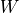

Tests¶
-
class
tests.Tests(methodName='runTest')¶ Bases:
unittest.case.TestCase-
test_MyTuple()¶ Check that
MyTuplebehaves as expected.
-
test_already_minimum_graph()¶ Check that Algorithms OPT1 and OPT2 work on already minimum graphs.
-
test_correlator1_cp()¶ Check that the clock period of correlator1 is 24.
-
test_correlator1_feas()¶ Check that 13 is a feasible clock period for correlator1 with Algorithm FEAS.
-
test_correlator1_opt1()¶ Check that Algorithm OPT1 applied to correlator1 produces a clock period of 13.
-
test_correlator1_opt2()¶ Check that Algorithm OPT2 applied to correlator1 produces a clock period of 13.
-
test_correlator1_retimed_opt1_synchronous_circuit()¶ Check that the circuit retimed with Algorithm OPT1 starting from correlator1 is actually a synchronous circuit.
-
test_correlator1_retimed_opt2_synchronous_circuit()¶ Check that the circuit retimed with Algorithm OPT2 starting from correlator1 is actually a synchronous circuit.
-
test_correlator1_synchronous_circuit()¶ Check that correlator1 is actually a synchronous circuit.
-
test_correlator1_wd()¶ Check that matrices  and
 of correlator1 correspond to the ones stated in the paper.
of correlator1 correspond to the ones stated in the paper.
-
test_correlator2_cp()¶ Check that the clock period of correlator2 is 17.
-
test_correlator2_feas()¶ Check that 13 is a feasible clock period for correlator2 with Algorithm FEAS.
-
test_correlator2_opt1()¶ Check that Algorithm OPT1 applied to correlator2 produces a clock period of 13.
-
test_correlator2_opt2()¶ Check that Algorithm OPT2 applied to correlator2 produces a clock period of 13.
-
test_correlator2_retimed_opt1_synchronous_circuit()¶ Check that the circuit retimed with Algorithm OPT1 starting from correlator2 is actually a synchronous circuit.
-
test_correlator2_retimed_opt2_synchronous_circuit()¶ Check that the circuit retimed with Algorithm OPT2 starting from correlator2 is actually a synchronous circuit.
-
test_correlator2_synchronous_circuit()¶ Check that correlator2 is actually a synchronous circuit.
-
test_correlators()¶ Check that all the correlators of order optimized either with Algorithm OPT1 or OPT2 have a clock period not greater that 14.
-
test_random_opt1()¶ Check that Algorithm OPT1 works on 10 randomly generated synchronous circuits.
-
test_random_opt2()¶ Check that Algorithm OPT2 works on 10 randomly generated synchronous circuits.
-
test_random_wd()¶ Check that the computed and
matrices correspond to the definition.
-
-
tests.wd2numpy_correlator(m)¶ Transform matrix or
of correlator1 into a 2D numpy array.- Parameters
m – matrix or
as returned by Algorithm WD.- Returns
the numpy version of the provided matrix.